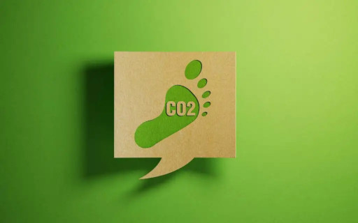
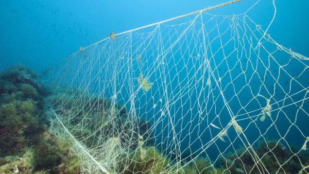

Global statistics

Jaki ślad węglowy pozostawia produkcja żywności?
agronomist.pl
Produkcja żywności odpowiada za około jedną czwartą łącznej emisji gazów cieplarnianych do atmosfery, przy czym działania związane z hodowlą zwierząt stanowią ok. 18% (co daje 80% ogółu emisji z rolnictwa).

Rybackie sieci widma, które zostają zgubione w oceanach tylko w ciągu roku, mogą opleść Ziemię 18 razy
national-geographic.pl
Każdego roku rybacy na całym świecie gubią różnego rodzaju narzędzia połowowe. Utracone przypadkiem lub porzucone sieci stają się pułapkami, śmiertelnie niebezpiecznymi dla morskich zwierząt. Naukowcy policzyli, że w ciągu roku w oceanach zostaje 740 tys. km samych lin.
71% lasów deszczowych ginie na potrzeby przemysłu mięsnego
blog.viva.org.pl
Nowe badania przeprowadzone przez Union of Concerned Scientists zwracają uwagę na związek postępującej deforestacji lasów amazońskich z produkcją wołowiny i rozwojem branży mięsnej.